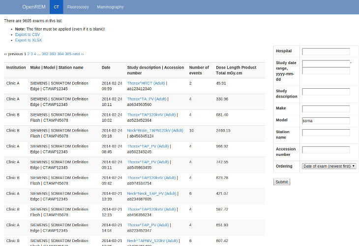
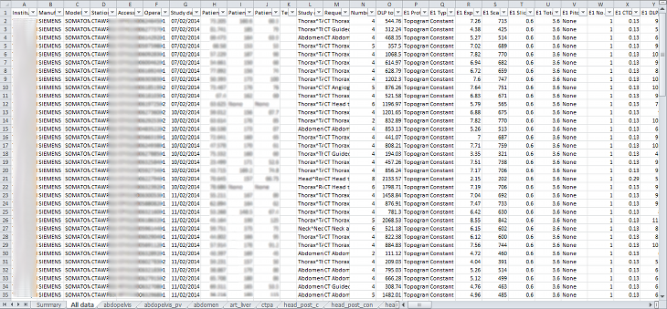

Using the OpenREM interface and export function¶
Navigating the OpenREM web interface¶
Depending on your web server setup, your web interface to OpenREM will usually be at http://yourserver/openrem or if you are using the test web server then it might be at http://localhost:8000/openrem.
The home page for OpenREM should look something like this when it is populated with studies:

By selecting the links in the navigation bar at the top, you can view all of the CT, fluoroscopy or mammography studies. Alternatively, if you click on the station name link (in blue) you can filter to just that source modality.
Filtering for specific studies¶
This image shows the CT studies view, filtered by entering terms in the boxes on the right hand side to show just the studies for a particular date range and for just one source modality (filtering on station name):
{kind=link}
The search fields can all be used on their own or together, and they are all case insensitive ‘contains’ searches. The exception is the date field, where both from and to have to be filled in (if either are), and the format must be yyyy-mm-dd. There currently isn’t any more complex filtering available, but it does exist as issue 17 for a future release.
The last box below the filtering search boxes is the ordering preferance. The order by date function does not currently take into account the time of the study - issue 37 exists to address this.
Viewing study details¶
By clicking on the study description link (in blue), you can see more details for an individual study:

Not all the details stored for any one study are displayed, just those thought to be most useful. If there are others you’d like to see, add an issue to the tracker.
The final field in the summary at the top is called ‘Test patient indicators?’ When studies are imported the ID and patient name fields are both ignored, but they are parsed to check if they have ‘phy’, ‘test’ or ‘qa’ in them to help exclude them from the data analysis. If they do, then this information is added to the field and is displayed both in the web interface as a Test patient indicator and in the Excel export. The name and ID themselves are not reproduced, simply the presence of one of the key words. Therefore a patient named ‘Phyliss’ would trigger this, but only ‘Phy’ would be reproduced in this field. Other fields will also help to confirm whether a study is for a real patient such as the lack of an Accession Number and an unusual patient age.
Exporting to csv and xlsx sheets¶
From any of the modality pages in the OpenREM interface, you can export the displayed studies to a csv spreadsheet by clicking on the link near the top. In the CT interface, you can also export to an enhanced XLSX spreadsheet. In either case, the export will not work unless the ‘Submit’ button on the filtering dialogue has been pressed.
For CT, the XLSX export has multiple sheets. The first sheet contains a summary of all the study descriptions, requested procedures and series protocol names contained in the export:

This information is useful for seeing what data is in the spreadsheet, and can also be used to prioritise which studies or protocols to analyse based on frequency.
The second sheet of the exported file lists all the studies, with each study taking one line and each series in the study displayed in the columns to the right.
{kind=link}
The remainder of the file has one sheet per series protocol name. Each series is listed one per line. If a single study has more than one series with the same protocol name, then the same study will appear on more than one line.